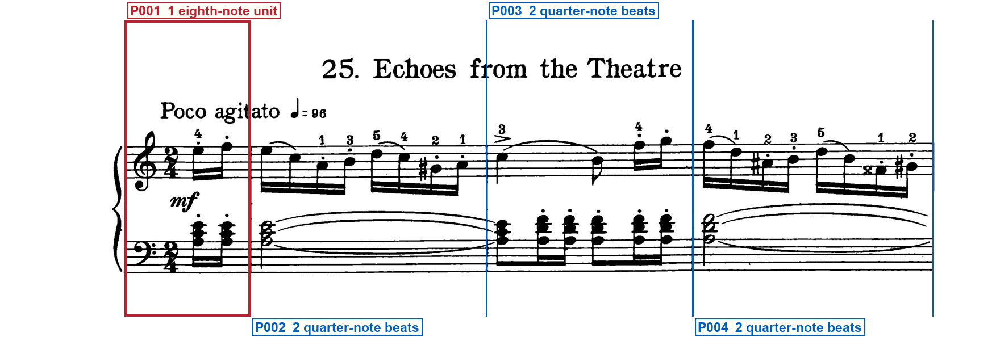
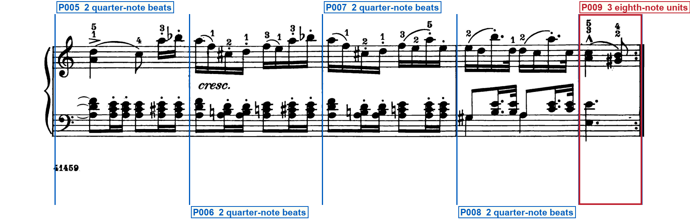
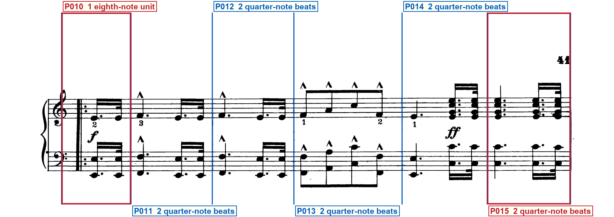
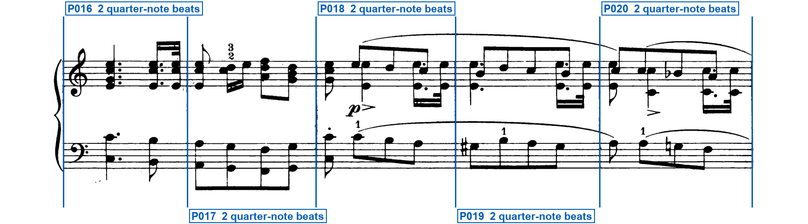
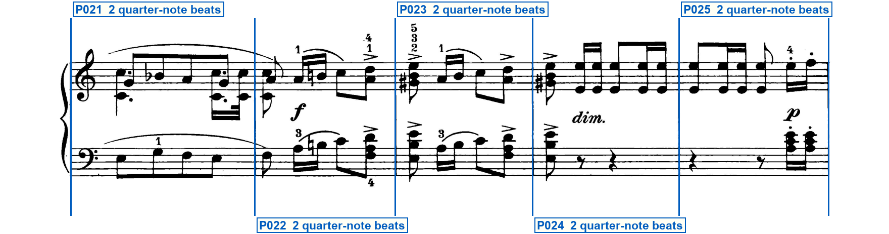
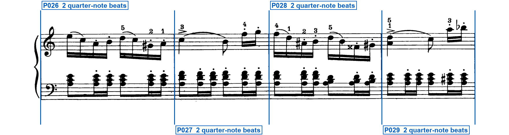
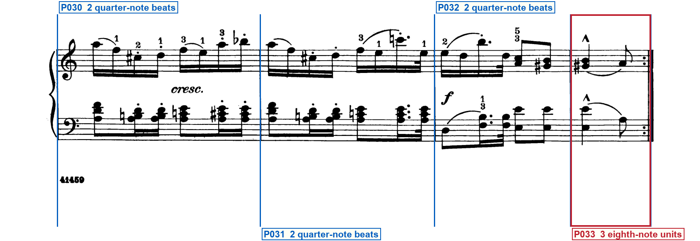

Printed-frame check
schumann_op68_25_echoes_from_the_theatre
Blue regions are silent: verify that they are ordinary bars. Red regions have one compact label directly below their system. Blue vertical lines must sit on printed barlines. Labels must remain outside the music.
System 1 — 4 printed regions

- P001 — OPENING SIGNATURE · PICKUP — Opening G and F clefs and 2/4 at the left of system 1 · Two beamed sixteenths after the 2/4, totaling one eighth
System 2 — 5 printed regions

- P009 — PARTIAL BAR · REPEAT END — Quarter plus eighth before the system-2 close, three eighths · Backward-repeat dots at the right of system 2
System 3 — 6 printed regions

- P010 — PICKUP · REPEAT START — Two beamed sixteenths after the system-3 forward repeat, totaling one eighth · Forward-repeat dots after the reprinted clefs on system 3
- P015 — DOUBLE BARLINE · SECTION BOUNDARY — Thin double barline at the right of system 3 · Section break after the fortissimo chords
System 4 — 5 printed regions

System 5 — 5 printed regions

System 6 — 4 printed regions

System 7 — 4 printed regions

- P033 — PARTIAL BAR · REPEAT END · FINAL BARLINE — Quarter plus eighth before the system-7 close, three eighths · Backward-repeat dots at the right of system 7 · Final printed close of the piece
Full clef inventory
Opening treble and bass clefs only. Every later system reprints those same clefs; no later printed clef change.
Opening clefs
- Staff 1: treble clef — Left of the opening 2/4 on the upper staff
- Staff 2: bass clef — Left of the opening 2/4 on the lower staff
Printed clef changes (0)
- No later clef changes are printed.
Verifier notes and special checks
Print has 33 regions on seven systems (4 + 5 + 6 + 5 + 5 + 4 + 4). P001 ends at the first measure barline at x=440; P010 ends at the barline at x=375. Both pickups are two beamed sixteenths totaling one eighth. P009 and P033 are three eighths with backward repeats. Those pairs each complete one 2/4. Opening G and F only. Thin double bar at the right of system 3. Source-blindness confirmed: only the hashed request and the hashed print files named in that request were used.
- Print check:
- Print check:
- Print check:
Your verification checks
- Do all staves, notes, rests, slurs and other musical marks fit completely inside the page?Expected: Yes
- Do the blue lines match every printed barline, giving 33 printed regions?Expected: Yes
- Do the compact red labels state every visible repeat, ending, route mark, special barline, partial, meter/key change and clef change—and are all unlabeled blue regions truly normal?Expected: Yes
- Are all region labels outside the printed system, with no ending, repeat, clef, note or mark hidden?Expected: Yes
- Does the clef list state each opening clef and every visible clef change?Expected: Yes
Approve only after every answer is Yes. Tell the Orchestrator: Frame approved or Frame rejected with the system number.